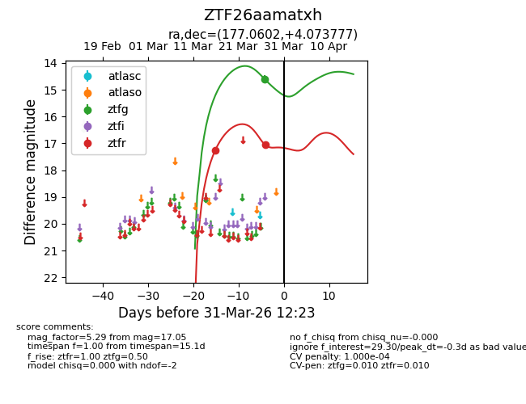
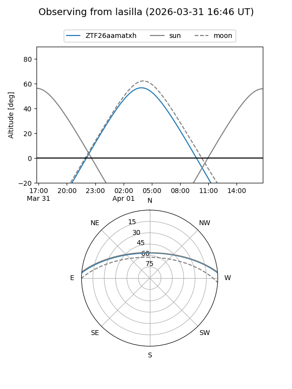
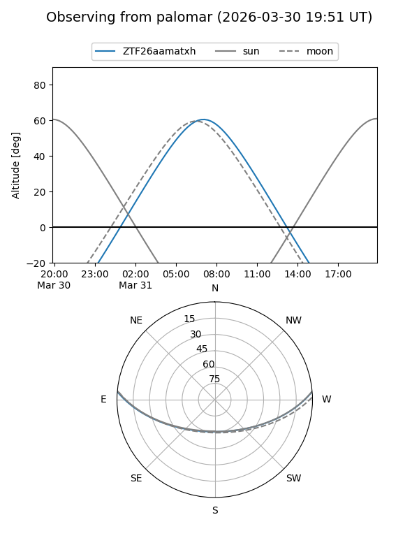
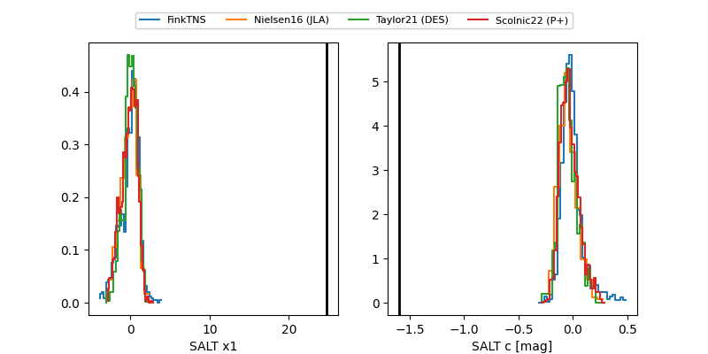

ZTF26aamatxh
Target ZTF26aamatxh at 2026-03-31 12:26
Aliases and brokers:
FINK: link
Lasair: link
ALeRCE: link
alt names
ZTF26aamatxh (ztf,fink_ztf)
Coordinates:
equatorial (ra, dec) = 177.0602,+4.07378
equatorial (HMS+DMS) = 11:48:14.44,+04:04:25.60
galactic (l, b) = (266.9774,+62.44848)
Flags:
likely cv
Photometry:
last ztfg=14.61, ztfr=17.05
1 ztfg, 2 ztfr detections
Lightcurve

Visibility


Additional plots
